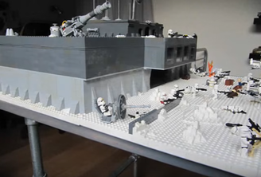
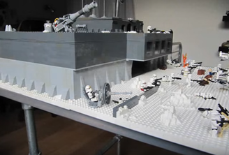
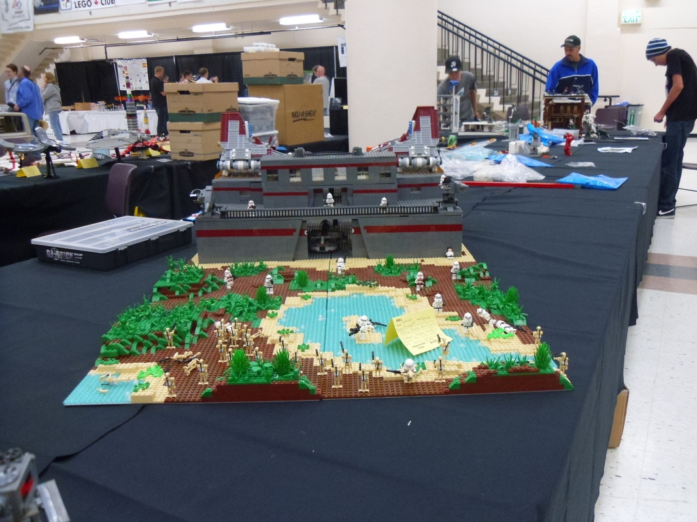
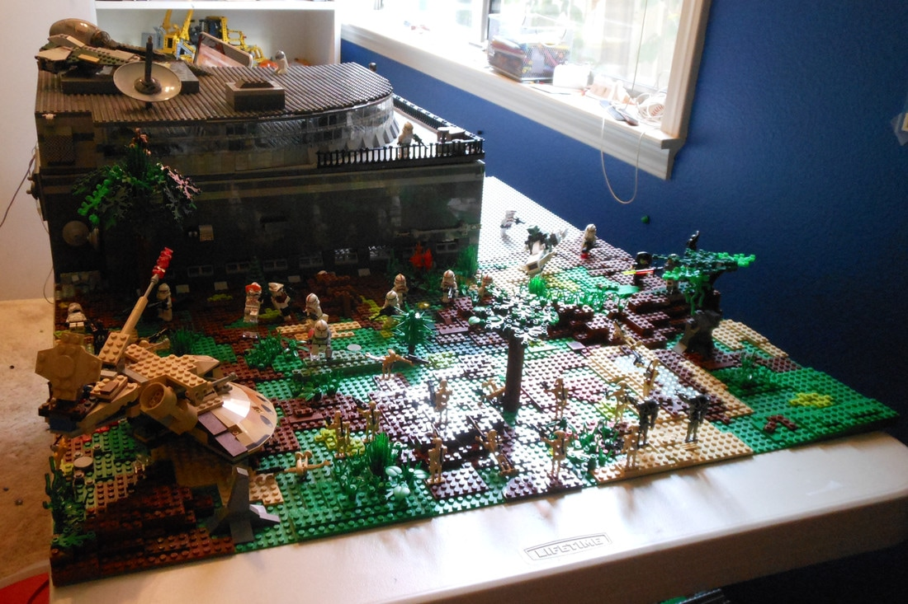
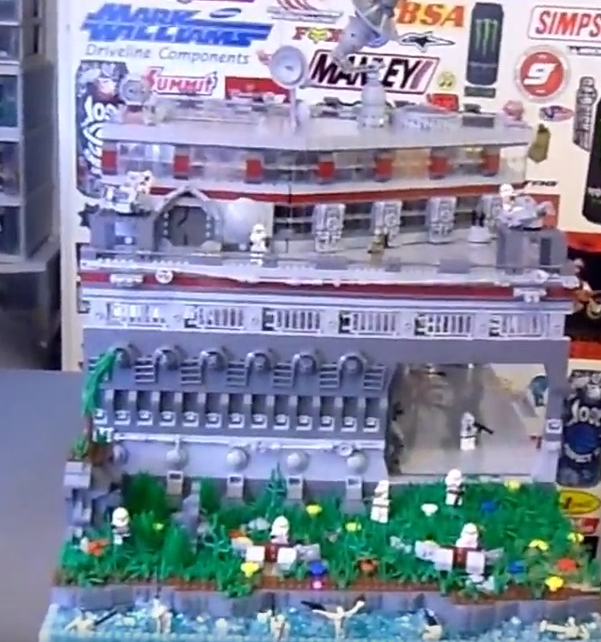
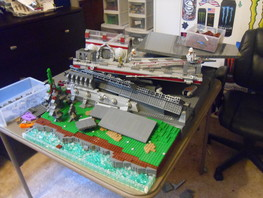
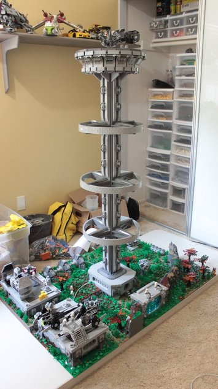
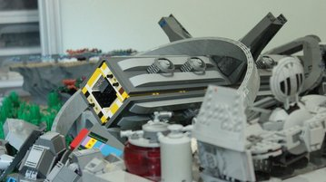
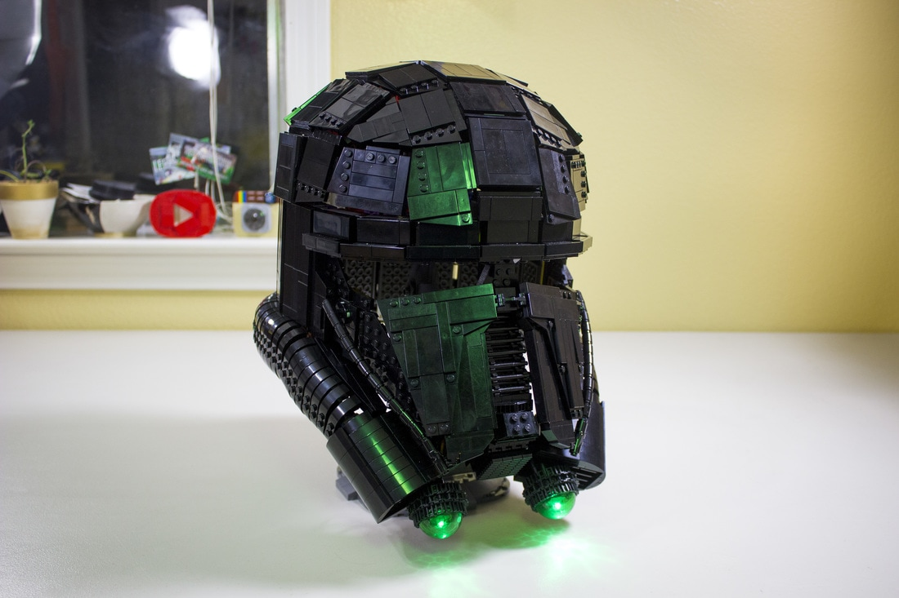

From Then to Now
Progressing as a MOC Builder
5/28/17
Over the years of what I at least have on record, I've made quite a few MOCs. Since the first one I posted on YouTube in 2010 I've improved considerably, as I would assume everyone else would as they gain more experience. Now, hundreds of builds big and small, a good amount even posted on my Flickr and YouTube, I can look back and see my progression through the years. Especially with all of it posted on the Internet, in order from when I created it, it's easy to see maybe what some of my more pivotal creations were, or where I could have lost a little interest in the building scene. I encourage you to do the same because I've found it really interesting to delve into the archives of old LEGO models. Not only that, it seems to have simply served as a good source of inspiration for a few big undertakings I'm preparing to start in anticipation for BrickWorld Chicago to try and make them as awesome as possible.
Obviously I can't go over every single one, but I'll talk about a few that I think portray the progression as best as possible. The first comes from way back in 2010, one of the first in a line of many Clone Bases to come over the following years.
 Clearly back in the day I didn't care as much for presentation. I guess the both of us will have to try and look past that... By this point in time I had been building LEGO for a while. I was using the pieces I had around to the best of my ability, which I think it sort of clear in the terrain and little random details in the interior. But obviously the majority of parts used are Pick A Brick. I spot some random pieces I must have purchased off Bricklink or LEGO.com, but definitely not many. It's definitely clear by some of the techniques I adopted from other builders around that time that I was at least present on the YouTube scene. Specifically the blue windows, slopes supporting the front wall, and the red and dark blay color scheme. Not to mention the complete design rip-off from a very old Karlijntje build, with the front command building hanging over the entrance. I also can't imagine a few other ideas weren't jacked from either here or another MOC on the Internet. Suppose I didn't totally understand how to "steal like an artist" back then.
Clearly back in the day I didn't care as much for presentation. I guess the both of us will have to try and look past that... By this point in time I had been building LEGO for a while. I was using the pieces I had around to the best of my ability, which I think it sort of clear in the terrain and little random details in the interior. But obviously the majority of parts used are Pick A Brick. I spot some random pieces I must have purchased off Bricklink or LEGO.com, but definitely not many. It's definitely clear by some of the techniques I adopted from other builders around that time that I was at least present on the YouTube scene. Specifically the blue windows, slopes supporting the front wall, and the red and dark blay color scheme. Not to mention the complete design rip-off from a very old Karlijntje build, with the front command building hanging over the entrance. I also can't imagine a few other ideas weren't jacked from either here or another MOC on the Internet. Suppose I didn't totally understand how to "steal like an artist" back then.
Probably not much to say here. This was about a year after the MOC above, with a handful in between. Obviously still couldn't figure out how to take a photo. Although the MOC may be looking "cleaner" and more neat I guess is a way to put it, I think here I was in a phase of using less variety of piece. Clearly there is a lot of PAB and not too many unique elements of the build. Also a rehash of the design seen in the base from earlier...
Admittedly much of this MOC looks pretty janky and simply throw together with what I had. But looking at it in comparison to what I had done before I was really trying to stretch my legs with new techniques (ex. the curved wall) while also getting in more detail and taking advantage of the collection of miscellaneous bricks that were just sitting around. It may not look like much, but it appears to be a step in the right direction with some of the bases that followed it.
This was one of a few bases that I'm still pretty happy with today. The greebling was a little over the top in some areas in all of them, but in hindsight, this build and this one here appear to be pivotal in my progression as a LEGO builder. The style was cool and unique "enough" while I was pushing my limits for how far I could go, which didn't always completely work out, as seen on the right... But after this point the MOCs really started to actually become interesting.
Throughout the next couple years of MOCs and videos I honed my skills in building as well as videography. Even though I'm proud of these builds, I'm going to skip them because they're all pretty similar and I didn't go under any huge changes. Anyway, moving on to the Kuat tower.
The big reason I include my 5 foot tall tower is frankly because it's still one of my favorites. The story behind it's creation simply goes I wanted to make a ridiculously tall tower to stand out at Bricks by the Bay. In my eyes I succeeded, because this was really cool. But not only did it gain a lot of recognition from fellow FOLs, I subsequently developed building techniques I now use frequently. Particularly everything that went into the circular top room. So much so that I made an entire video just on the room here. This one also happened to have a few mishaps while under construction...
Now finally we can make our way on to "the present day" and the last MOC I see as a considerable staple of my history as a builder. I'll be skipping another year including Clones Alone, my Shiptember ship, and some others to what I consider to be the pinnacle of everything so far.
Finished in time for Rogue One, the wearable Death Trooper helmet made entirely out of brick was and still is the most out of the box and crazy build I've ever done. In my eyes, essentially everything so far built up to this. I definitely wouldn't have been able to design and construct the model without years of experiences. Looking back, I'm really pleased with when I tried to push myself, because everything that followed was always improved and gained from that experimentation of working a little harder and trying something new.
Anyway, thanks for enduring this super long post. It was a lot of fun to write and "research" my own history. I hope you got something out of it as I did.